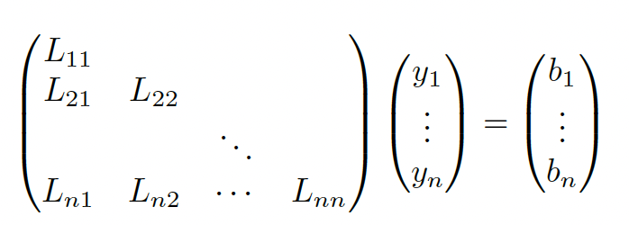

We can formulate linear equations in the form of Ax=b.
If we have m equations and n unknowns, then A will be a m×n matrix and b a m×1 vector.
- If m=n and A is full rank, there is a single unique solution
- If m<n the system is underdetermined so there is no unique solution
- If m>n the system is overdetermined, not all the lines intersect at the same point

7.7.1 Solving square systems
When m=n, we can solve the LU decomposition for x.
AxLUxUxx=b=b=L−1b≜y=U−1y The point is that L and U are triangular, so we don’t need to compute the inverse and can use back substitution instead. For L−1b=y
We start by solving y1=b1/L11, then we substitute it into L12y1+L22y2=b2 and iterate.
Once we have y, we can apply the same computation for x=U−1y.
7.7.2 Solving under-constrained systems (least norm estimation)
We assume m<n and A to be full-rank, so there are multiple solutions:
{x:Ax=b}={xp+z:z∈nullspace(A)} Where xp is any solution. It is standard to pick the solution minimizing the ℓ2 regularization:
x^=xargmin∣∣x∣∣22,s.t.Ax=b We can compute the minimal norm solution using the right pseudo inverse:
x=A⊤(AA⊤)−1b We can also solve the constrained optimization problem by minimizing the norm:
L(x,λ)∇xL∇λL=x⊤x+λ⊤(Ax−b)=2x+A⊤λ=0=Ax−b=0 Therefore:
xAx=−21A⊤λ=−21AA⊤λ=b⇒λ=−2(AA⊤)−1b Finally we find the right pseudo inverse again:
x=A⊤(AA⊤)−1b
7.7.3 Solving over-constrained systems (least square estimation)
If m>n, we’ll try to find the closest solution satisfying all constrained specified by Ax=b, by minimizing the least square objective:
f(x)=21∣∣Ax−b∣∣22 We know that the gradient is:
g(x)=∂x∂f(x)=A⊤(Ax−b)=A⊤Ax−A⊤b Hence the solution is the OLS:
x^=(A⊤A)−1A⊤b With A†=(A⊤A)−1A⊤ the left pseudo inverse.
We can check that this solution is unique by showing that the Hessian is positive definite:
h(x)=∂2x∂2f(x)=A⊤A Which is positive definite if A is full-rank since for any v>0 we have:
v⊤A⊤Av=(Av)⊤(Av)=∣∣Av∣∣2>0
{kind=link}